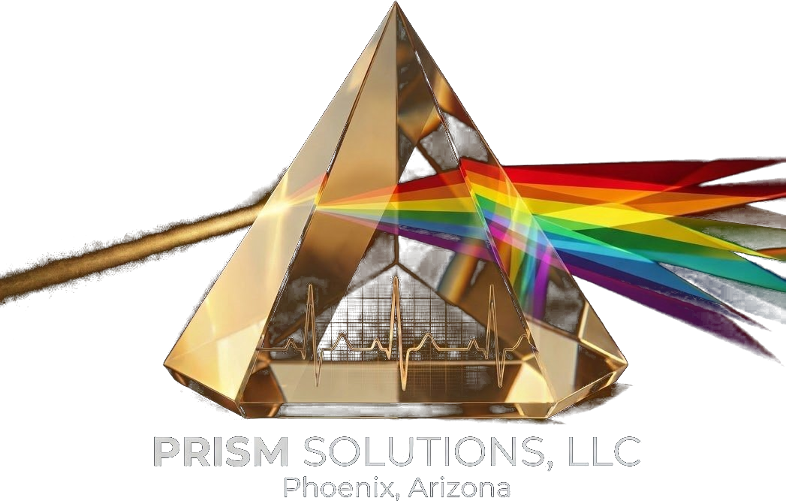

Efficiency consulting that moves your work forward.
Prism Solutions helps teams spot bottlenecks and streamline workflows. Clear guidance, practical plans, and measurable results from the first session.
How we work
Most time management advice assumes you're the problem. Usually, you're not.
We map your real workflow, protect deep work, remove bottlenecks, and build habits that stick, designed for how real people (and real brains and bodies) actually work.
Process audits
We map your real workflow, not the one on paper, and pinpoint where hours actually disappear.
Time blocking
Structured calendars that protect deep work, batch tasks, and cut constant context-switching.
Bottleneck fixes
One slow step can stall everything. We find the constraint, remove it, and keep it from coming back.
Team adoption
A process only works if people use it. We focus on simple, sustainable, accessible habits.
By the numbers
Three steps to reclaim a third of your week.
Targets we aim for when we map and rebuild your workflows.
Structured agendas and tighter cadences.
Clear ownership and checkpoints.
Automation replaces data entry and status chasing.
Back to the work that actually matters.
About
Hi, I'm Lindsey-Star.
I'm a queer, disabled woman in Phoenix, and I've been fixing broken systems for a long time. First as a consultant, and then for myself, when life decided to set my whole world on fire and I had to rebuild from scratch.
Here's what that taught me: when your energy has a daily limit, wasted time isn't just annoying, it's expensive. So I build systems that work on your worst days, not just your good ones.
I'm not here to judge your messy spreadsheet or the 47 sticky notes running your business. I've been there. I'll help you figure out what's actually eating your time, fix it, and set it up so it keeps working after I'm gone. No fluff, no jargon, and nothing so complicated it falls apart the first time life gets weird. And it always gets weird.

Client feedback
What teams say after working with us.
"The first session mapped our bottlenecks exactly. Within a month, weekly reporting time was cut in half and the team finally trusts the process."
"Lindsey-Star didn't just hand us a list of tips. We walked out with a structured workflow we still use every single week."
"Our Monday meetings used to eat the whole morning. The new agenda structure saved us hours and nobody misses the old format."
FAQ
Straight answers.
How does the first session work?
We start with a time audit. You show us how your team actually spends the day, and we map the bottlenecks together. No vague theory.
What does a typical engagement look like?
We agree on scope, set a timeline, and define success upfront. You get a tailored plan, not a generic deck.
How long before we see results?
Most clients feel the difference within the first few weeks. Small, sustainable changes add up fast.
How do you price projects?
Based on scope. Costs and deliverables are laid out before anything starts, so there are no surprises.
Do you work with remote or accessibility-focused teams?
Yes. Sessions can be virtual, asynchronous, or in person around Phoenix, and every system is built with accessibility and flexibility in mind.
Get started
Ready to get your time back?
Book a time audit and walk away with a clear map of where your hours are going.